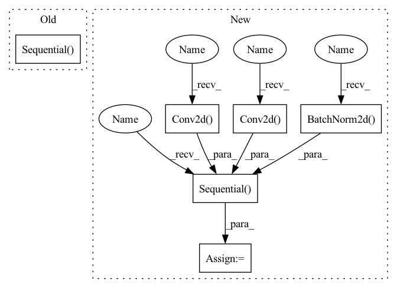

Pattern ID :2210

Before Change
nn.LeakyReLU(0.2),
nn.Conv2d(out_channels, out_channels, 3)]
self.features = nn.Sequential(*block)
self.avgpool = nn.AdaptiveAvgPool2d((512, 512))
self.classifier = nn.Sequential(
After Change
def __init__(self):
super(Discriminator, self).__init__()
self.features = nn.Sequential(
// Conv0
nn.Conv2d(3, 64, kernel_size=3, stride=1, padding=1, bias=False),
nn.LeakyReLU(negative_slope=0.2, inplace=True),
nn.Conv2d(64, 64, kernel_size=4, stride=2, padding=1, bias=False),
nn.BatchNorm2d(64),
nn.LeakyReLU(negative_slope=0.2, inplace=True),
// Conv1
nn.Conv2d(64, 128, kernel_size=3, stride=1, padding=1, bias=False),
nn.BatchNorm2d(128),
nn.LeakyReLU(negative_slope=0.2, inplace=True),
nn.Conv2d(128, 128, kernel_size=4, stride=2, padding=1, bias=False),
nn.BatchNorm2d(128),
nn.LeakyReLU(negative_slope=0.2, inplace=True),
// Conv2
nn.Conv2d(128, 256, kernel_size=3, stride=1, padding=1, bias=False),
nn.BatchNorm2d(256),
nn.LeakyReLU(negative_slope=0.2, inplace=True),
nn.Conv2d(256, 256, kernel_size=4, stride=2, padding=1, bias=False),
nn.BatchNorm2d(256),
nn.LeakyReLU(negative_slope=0.2, inplace=True),
// Conv3
nn.Conv2d(256, 512, kernel_size=3, stride=1, padding=1, bias=False),
nn.BatchNorm2d(512),
nn.LeakyReLU(negative_slope=0.2, inplace=True),
nn.Conv2d(512, 512, kernel_size=4, stride=2, padding=1, bias=False),
nn.BatchNorm2d(512),
nn.LeakyReLU(negative_slope=0.2, inplace=True),
// Conv4
nn.Conv2d(512, 512, kernel_size=3, stride=1, padding=1, bias=False),
nn.BatchNorm2d(512),
nn.LeakyReLU(negative_slope=0.2, inplace=True),
nn.Conv2d(512, 512, kernel_size=4, stride=2, padding=1, bias=False),
nn.BatchNorm2d(512),
nn.LeakyReLU(negative_slope=0.2, inplace=True)
)
self.avgpool = nn.AdaptiveAvgPool2d((512, 512))
self.classifier = nn.Sequential(
In pattern: SUPERPATTERN
Frequency: 3
Non-data size: 6
Instances
Fragment ID: 5503058
Project Name: lornatang/esrgan-pytorch
Commit Name: 8ef58f0f8458d618a99fffa07433927c9b9ef70f
Time: 2020-10-12
Author: liuchangyu1111@gmail.com
File Name: esrgan_pytorch/model.py
M Class Name: Discriminator
N Class Name: Discriminator
M Method Name: __init__(1)
N Method Name: __init__(2)
M Parent Class: nn.Module
N Parent Class: nn.Module
M File Name: esrgan_pytorch/model.py
N File Name: esrgan_pytorch/model.py
M Start Line: 140
M End Line: 177
N Start Line: 26
N End Line: 74
'>
Before Change
nn.LeakyReLU(0.2),
nn.Conv2d(out_channels, out_channels, 3)]
self.features = nn.Sequential(*block)
self.avgpool = nn.AdaptiveAvgPool2d((512, 512))
self.classifier = nn.Sequential(
After Change
def __init__(self):
super(Discriminator, self).__init__()
self.features = nn.Sequential(
// Conv0
nn.Conv2d(3, 64, kernel_size=3, stride=1, padding=1, bias=False),
nn.LeakyReLU(negative_slope=0.2, inplace=True),
nn.Conv2d(64, 64, kernel_size=4, stride=2, padding=1, bias=False),
nn.BatchNorm2d(64),
nn.LeakyReLU(negative_slope=0.2, inplace=True),
// Conv1
nn.Conv2d(64, 128, kernel_size=3, stride=1, padding=1, bias=False),
nn.BatchNorm2d(128),
nn.LeakyReLU(negative_slope=0.2, inplace=True),
nn.Conv2d(128, 128, kernel_size=4, stride=2, padding=1, bias=False),
nn.BatchNorm2d(128),
nn.LeakyReLU(negative_slope=0.2, inplace=True),
// Conv2
nn.Conv2d(128, 256, kernel_size=3, stride=1, padding=1, bias=False),
nn.BatchNorm2d(256),
nn.LeakyReLU(negative_slope=0.2, inplace=True),
nn.Conv2d(256, 256, kernel_size=4, stride=2, padding=1, bias=False),
nn.BatchNorm2d(256),
nn.LeakyReLU(negative_slope=0.2, inplace=True),
// Conv3
nn.Conv2d(256, 512, kernel_size=3, stride=1, padding=1, bias=False),
nn.BatchNorm2d(512),
nn.LeakyReLU(negative_slope=0.2, inplace=True),
nn.Conv2d(512, 512, kernel_size=4, stride=2, padding=1, bias=False),
nn.BatchNorm2d(512),
nn.LeakyReLU(negative_slope=0.2, inplace=True),
// Conv4
nn.Conv2d(512, 512, kernel_size=3, stride=1, padding=1, bias=False),
nn.BatchNorm2d(512),
nn.LeakyReLU(negative_slope=0.2, inplace=True),
nn.Conv2d(512, 512, kernel_size=4, stride=2, padding=1, bias=False),
nn.BatchNorm2d(512),
nn.LeakyReLU(negative_slope=0.2, inplace=True)
)
self.avgpool = nn.AdaptiveAvgPool2d((512, 512))
self.classifier = nn.Sequential(
'>
Fragment ID: 5503056
Project Name: lornatang/esrgan-pytorch
Commit Name: 8ef58f0f8458d618a99fffa07433927c9b9ef70f
Time: 2020-10-12
Author: liuchangyu1111@gmail.com
File Name: esrgan_pytorch/model.py
M Class Name: Discriminator
N Class Name: Discriminator
M Method Name: __init__(1)
N Method Name: __init__(2)
M Parent Class: nn.Module
N Parent Class: nn.Module
M File Name: esrgan_pytorch/model.py
N File Name: esrgan_pytorch/model.py
M Start Line: 140
M End Line: 177
N Start Line: 26
N End Line: 74
'>
Before Change
class MaxViT_Block(nn.Module):
def __init__(self, stage_dim_in, layer_dim,kernel,dilation,padding, is_first, mbconv_expansion_rate,mbconv_shrinkage_rate,w,dim_head,dropout):
super(MaxViT_Block, self).__init__()
self.block = nn.Sequential(
MBConv(
stage_dim_in,
layer_dim,
kernel,
dilation,
padding,
downsample=is_first,
expansion_rate=mbconv_expansion_rate,
shrinkage_rate=mbconv_shrinkage_rate
),
Rearrange("b d (x w1) (y w2) -> b x y w1 w2 d", w1=w, w2=w), // block-like attention
PreNormResidual(layer_dim, Attention(dim=layer_dim, dim_head=dim_head, dropout=dropout, window_size=w)),
PreNormResidual(layer_dim, FeedForward(dim=layer_dim, dropout=dropout)),
Rearrange("b x y w1 w2 d -> b d (x w1) (y w2)"),
Rearrange("b d (w1 x) (w2 y) -> b x y w1 w2 d", w1=w, w2=w), // grid-like attention
PreNormResidual(layer_dim, Attention(dim=layer_dim, dim_head=dim_head, dropout=dropout, window_size=w)),
PreNormResidual(layer_dim, FeedForward(dim=layer_dim, dropout=dropout)),
Rearrange("b x y w1 w2 d -> b d (w1 x) (w2 y)"),
)
def forward(self,x):
return self.block(x)
After Change
nn.SiLU(),
)
self.l1 = nn.Sequential(
nn.Conv2d(layer_dim, layer_dim, kernel_size=kernel, stride=1, padding="same", dilation=dilation,groups=layer_dim),
SqueezeExcitation(layer_dim, shrinkage_rate=mbconv_shrinkage_rate),
nn.Conv2d(layer_dim, layer_dim, 1),
nn.BatchNorm2d(layer_dim)
)
self.l2 = Rearrange("b d (x w1) (y w2) -> b x y w1 w2 d", w1=w, w2=w) // block-like attention
self.l3 = PreNormResidual(layer_dim, Attention(dim=layer_dim, dim_head=dim_head, dropout=dropout, window_size=w))
self.l4 = PreNormResidual(layer_dim, FeedForward(dim=layer_dim, dropout=dropout))
self.l5 = Rearrange("b x y w1 w2 d -> b d (x w1) (y w2)")
'>
Fragment ID: 5502997
Project Name: tvs-ai/pytorch_rppgs
Commit Name: 11bf731ca08a7284c22299029bbc7598a771f029
Time: 2023-02-20
Author: spicyyeol@gmail.com
File Name: nets/modules/vit_pytorch/max_vit.py
M Class Name: MaxViT_Block
N Class Name: MaxViT_Block
M Method Name: __init__(12)
N Method Name: __init__(12)
M Parent Class: nn.Module
N Parent Class: nn.Module
M File Name: nets/modules/vit_pytorch/max_vit.py
N File Name: nets/modules/vit_pytorch/max_vit.py
M Start Line: 326
M End Line: 346
N Start Line: 341
N End Line: 361
'>
Before Change
// self.linear2 = nn.Linear(label_width_d, ndf*8*4*4, bias=bias)
// self.sigmoid = nn.Sigmoid()
self.linear = nn.Sequential(
nn.Linear(ndf*8*4*4, 1, bias=bias),
nn.Sigmoid()
)
def forward(self, x, y):
y = y.view(-1,1)
After Change
nn.LeakyReLU(0.2, inplace=True),
)
elif img_size == 128:
self.inputblock = nn.Sequential(
// input is (nc) x 128 x 128
nn.Conv2d(nc, ndf, kernel_size=4, stride=2, padding=1, bias=bias), //h=h/2
nn.BatchNorm2d(ndf),
nn.LeakyReLU(0.2, inplace=True),
// input is ndf x 64 x 64
nn.Conv2d(ndf, ndf, kernel_size=3, stride=1, padding=1, bias=bias), //h=h
nn.BatchNorm2d(ndf),
nn.LeakyReLU(0.2, inplace=True),
// input is ndf x 64 x 64
nn.Conv2d(ndf, ndf, kernel_size=4, stride=2, padding=1, bias=bias), //h=h/2
nn.BatchNorm2d(ndf),
nn.LeakyReLU(0.2, inplace=True),
// input is ndf x 32 x 32
nn.Conv2d(ndf, ndf, kernel_size=3, stride=1, padding=1, bias=bias), //h=h
nn.BatchNorm2d(ndf),
nn.LeakyReLU(0.2, inplace=True),
)
self.discblock1 = nn.Sequential(
'>
Fragment ID: 5503199
Project Name: ubcdingxin/improved_ccgan
Commit Name: 2a8bae896ece80f4718e97fcad12c0794f5866bd
Time: 2020-04-13
Author: dingx92@gmail.com
File Name: SteeringAngle/models/cont_cond_cnn_generator_discriminator.py
M Class Name: cont_cond_cnn_discriminator
N Class Name: cont_cond_cnn_discriminator
M Method Name: __init__(5)
N Method Name: __init__(5)
M Parent Class: nn.Module
N Parent Class: nn.Module
M File Name: SteeringAngle/models/cont_cond_cnn_generator_discriminator.py
N File Name: SteeringAngle/models/cont_cond_cnn_generator_discriminator.py
M Start Line: 135
M End Line: 189
N Start Line: 153
N End Line: 226